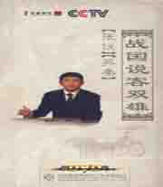

名称：
集数：
播出时间：
百家讲坛 战国说客双雄
10
2009年06月11日
有人说，人的所有器官最具攻击性与杀伤力的，不是尖牙利爪、不是拳脚而是舌头；世界上最让人提心吊胆的不是刀剑、不是枪弹也是舌头。被称为中国纵横家鼻祖的张仪，就是一位将口舌之功发挥得淋漓尽致、无以复加的说客。从公元前328年开始，张仪运用纵横之术游说于魏、楚、韩等国之间，利用各个诸侯国之间的矛盾，或为秦国拉拢使其归附于秦国，或拆散其连盟使其力量削弱。在整个秦惠王时期，他不仅使秦国在外交上连连取得胜利，而且帮助秦国开拓了疆土，为秦国的强大和以后统一中国立下了汗马功劳。秦惠王念张仪功劳卓著，封他为“武信君”并赐封给他五座城邑。就在张仪功成名就、春风得意的时候，一件大事的发生改变了他的人生轨迹，那么，张仪将如何去应对命运的变故？本期节目中，深圳大学的姜安教授讲对此进行解读。深圳大学教授姜安介绍了苏秦被燕昭王派往齐国进行谋反的过程，在苏秦的策划下，齐国出兵攻打宋国，最终导致齐国走到了风口浪尖之上。